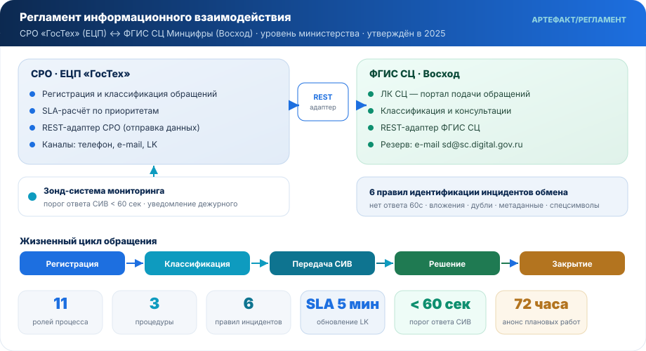
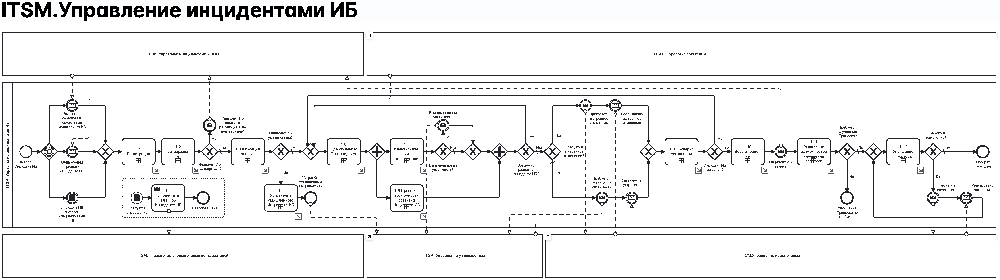

Хотите такой же результат?
Обсудить похожую задачу →Обсудим задачу — пришлю гипотезу с расчётом ROI в течение 48 часов.
Работа · Госсектор · 2024–2026
ГосТех ↔ МинЦифры: процессная трансформация государственной платформы
Функциональное руководство процессной и архитектурной трансформацией на уровне взаимодействия между «ГосТех» (ЕЦП) и Минцифры России — с полномочиями утверждать регламенты, SLA и ролевые модели.
4регламента внедрено
1согласован с Минцифры
11ролей процесса
TOGAFArchiMate
BPMNCamunda


🎯Задача
Выстроить управляемое информационное взаимодействие между системой регистрации обращений ЕЦП «ГосТех» и ФГИС «Ситуационный центр электронного правительства» Минцифры. Обеспечить единые правила обработки обращений, SLA, приоритеты и жизненный цикл между двумя государственными системами.
🛠️Что сделано
- Разработан и согласован с Минцифры Регламент информационного взаимодействия (СРО ЕЦП ↔ ФГИС СЦ) с полным описанием процесса, ролей и SLA
- Внедрены 4 регламента: обработка обращений, активы, аварии, информационная безопасность — управление процессной дисциплиной на уровне всей организации
- Спроектирована операционная модель управления авариями: единое окно, светофор, автопрозвон; архитектура REST API + интеграционные шины + ECM
- Сформирован каталог ИТ-услуг с методикой SLA и ФТТ/ТЗ для выбора ITSM-системы (Altevics, ESMP, Яндекс.Трекер по CAPEX/OPEX)
📐Архитектура взаимодействия
Процесс построен на зондирующих запросах (мониторинг доступности СИВ), передаче расписания плановых работ за 72 часа и контроле инцидентов обмена по 6 правилам идентификации. Матрица приоритетов и статусов между двумя СУЗ — полностью согласована.
Ключевые результаты
Регламент уровня Минцифрыутверждён тремя сторонами (Минцифры · ЕЦП · Восход)
4 процесса-стандартаобращения · активы · аварии · ИБ
SLA 5 минутобновление данных в ЛК СЦ
Артефакты
⚖️Регламент ГосТех ↔ МинЦифры
🔗Маппинг ГосТех / ФГИС СЦ
🗺️Схема инцидента ИБ
🛠️ТЗ и ФТТ на ITSM-систему
Источник цифр
Источник: Регламент взаимодействия ГосТех_МинЦифры.docx
Теги
АРТЕФАКТЫ КЕЙСА